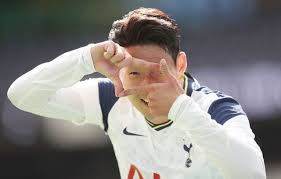

Son fan page
목차
1. 프로필
2. 개인수상기록
3. 세레모니 사진
프로필
profile
토트넘 홋스퍼 FC No.7
손흥민
(Son Heung-min)
출생
1992년 7월 8일(28세)
강원도 춘천시 후평동
국적
대한민국
학력
부안초등학교(졸)
후평중학교 -> 육민관중학교(졸업)
동북고등학교(중퇴)
신체 조건
183cm / 77kg / AB형 /
발 사이즈 255mm
포지션
윙어, 세컨드 스트라이커
주발
양발
후원사
아디다스
등번호
대한민국 축구 국가대표팀
7
토트넘 홋스퍼 FC
개인 수상 기록
발롱도르 후보: 2019 (22위)
FIFA FIFPro 월드 XI 후보: 2019 (FW 14위), 2020 (FW 15위)
FIFA 푸스카스상: 2020
UEFA 올해의 팀 후보: 2019
분데스리가 전반기의 신인: 2010-11
함부르크 역대 베스트 XI: 2018
프리미어 리그 이달의 선수: 2016년 09월, 2017년 04월, 2020년 10월
프리미어 리그 올해의 골: 2019-20
프리미어 리그 이달의 골: 2018년 11월, 2019년 12월
PFA 팬 선정 이달의 선수: 2018년 01월
FA컵 득점왕: 2016-17
런던 풋볼 어워드 올해의 선수: 2018-19
토트넘 홋스퍼 AIA 이달의 선수: 2019년 9월ㆍ10월ㆍ11월, 2020년 2월ㆍ9월ㆍ10월
UEFA 챔피언스 리그 조별리그의 팀: 2019-20
세레모니 사진
이미지를 클릭하면 다음 이미지를 보여줍니다.
